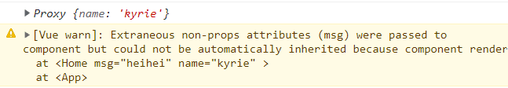

Vue3
Vue3
常用Composition API
setup
setup是组合式API中最重要的一部分，值为一个函数，组件中所用到的数据，方法等，都要配置在setup中
setup函数的两种返回值：
- 若返回一个对象，则对象中的属性、方法，在模板中均可以直接使用 (重点关注)
- 若返回一个渲染函数，则可以自定义渲染内容 (了解)
1 | <script> |
注意点：
尽量不要与vue2的配置混用
- vue2中的data,methods等配置可以访问到setup中的属性和方法
- 但在setup中不可以访问到vue2中的配置
- 如果属性和方法有重名，setup优先
setup不可以是一个async函数，因为他的返回值不是return，而是一个promise，这样模板就看不见return对象中的属性
setup的两个注意点
setup的执行时机：在beforeCreate之前执行一次，this是undefined
1 | name: 'App', |
控制台打印的结果：
setup的参数：
props值为对象，包含组件外部传递过来，且组件内部声明接收了的属性context上下文对象，包含：attrs组件外部传递过来，但未在组件内部props配置中声明接收的属性slots收到的插槽内容emit分发自定义事件的函数
1 | //App.vue |
可以在setup的props参数中接收到我们声明接收的name属性，msg属性我们并没有声明接收，所以在props参数中找不到他

1 | //App.vue |
打印出来的第一个proxy对象就是context的attrs属性，他收录了组件外部递给我们，但我们没有在props配置中声明接收的数据
通过context.emit实现了自定义事件的触发
注意： 控制台还打印了两个警告，第一个就是我们没有将外部传来的msg属性在props中声明的警告，第二个警告是我们需要在组件中声明一下接收外部传来的自定义事件，就是添加一个emits配置项
1 | export default ({ |
ref函数
在上一段代码中，点击年龄加一按钮你会发现年龄并没有更改，但控制台输出去显示数据已更改

因为上一段代码定义的属性都不是响应式的，vue不会检测到，这个时候就需要引入 ref函数 来进行响应式操作
1 | //导入 ref函数 |
从控制台的打印可以发现age，name属性被包裹成了refImpl对象，refImpl就是reference(引用) implement(实现) 即引用实现对象
我们可以这么理解，ref函数将我们传入的属性包装成一个引用实现对象，所以当我们取用数据时要将他用 xxx.value 的方法取出来，当ref包裹的是一个对象类型时，用对象名.value.属性名
注意：模板中使用数据不用 .value 可以理解为模板自动帮我们实现了这一步操作
reactive函数
reactive用于定义一个对象(或数组)类型的响应式数据(基本类型不要用它，要用ref函数)
1 | setup() { |
可以发现用ref函数包裹的hero.value 和 reactive函数包裹的hero1等价
reactive接收一个对象或数组类型，返回一个Proxy代理对象，用reactive包裹的数据在使用时不需要.value
reactive对比ref
从定义数据角度：
- ref用于定义基本数据类型
- reactive用于定义对象或数组类型数据
- ref也可以用来定义对象或数组类型，它内部会自动调用reactive转化为代理对象
从原理角度：
- ref通过object.defineProperty的get()和set()来实现响应式(数据劫持)
- reactive通过Proxy来实现响应式(数据劫持)
从使用角度：
- ref 操作数据需要
.value,模板中直接使用，不用.value - reactive 操作数据和模板使用时都可以直接用
computed函数
与vue2中的计算属性功能一致
1 | setup() { |
watch监视属性
监视ref定义的数据(监视的时候不用.value)
1
2
3
4
5
6
7
8
9
10
11
12
13
14
15
16
17
18
19
20
21
22//引入watch函数
import {ref,watch} from 'vue'
setup() {
let num = ref(0)
let msg = ref('hi')
function add() {
num.value += 1
}
function change() {
msg.value += 'hi'
}
// 监视一个ref响应式数据
//watch(num, (newValue,oldValue) => {
// console.log('num改变了', newValue, oldValue);
//})
// 监视多个ref响应式数据
watch([num,msg], (value,oldvalue) => {
console.log('num或msg改变了',value,oldvalue);
//immediate，deep等配置项放在后面
},{immediate:true})
}监视多个时，会以数组的形式返回
监视reactive定义的数据
1
2
3
4
5
6
7
8
9
10
11
12
13
14
15
16
17
18
19
20
21
22
23
24
25
26
27
28
29
30
31
32
33
34
35
36
37<h3>{{person.name}} -- {{person.age}}</h3>
<h3>{{person.friends.name}}</h3>
<button @click="add">点我年龄加一</button>
<button @click="change">点我改名字</button>
<button @click="changeF">改变py名字</button>
setup() {
let person = reactive({
age: 30,
name: 'kyrie',
friends: {
name: 'kd'
}
})
function add() {
person.age += 1
}
function change() {
person.name += 'hi'
}
function changeF() {
person.friends.name += 'hi'
}
//监视一个reactive定义的响应式数据
//注意1：无法正确的返回旧数据(22-4-27 目前没有解决办法)
//注意2：这种情况强制开启了deep，deep配置无效
watch(person, (value,oldvalue) => {
console.log(value, oldvalue);
},{depp:false})
return {
person,
add,
change,
changeF
}
},当点击了改变py名字的按钮时，控制台打印的新数据和旧数据一模一样，这个目前没有解决办法。其次，我们改变的是friends中的name属性，而且我们已经配置deep为false，即关闭深度监视，但还是打印出了结果，所以在这种情况下deep是强制开启的，我们无法配置
当我们监视reactive定义的一个响应式数据的某个属性时，第一个参数不可以直接写点某个属性，要用函数回调的方式，此时旧数据可以正确获取
1 | //监视reactive定义的一个响应式数据的某个属性 |
当我们监视reactive定义的一个响应式数据的某些属性时，要用一个数组来包裹那些数据的回调函数，此时旧数据可以正确获取
1 | //监视reactive定义的一个响应式数据的某些属性 |
特殊情况 当我们监视reactive定义的响应式数据中的一个对象类型数据时，deep配置又有用了
1 | setup() { |
watchEffect函数
不用指明监视哪个属性，函数回调中用到了哪些属性，就监视哪些属性
watchEffect和computed有点像：
- computed注重计算出来的值(回调函数的返回值)，所以必须写返回值
- watchEffect更注重过程(回调函数的函数体)，所以不用写返回值
1 | watchEffect(() => { |
Vue3生命周期钩子
vue3提供了组合式API形式的生命周期钩子，原来的配置项类型的钩子还是可以用
1 | //在组合式api中无法调用以下两个钩子，setup就相当于他们两个 |
自定义hook函数
本质是一个函数，把setup函数中使用的组合式API进行了封装，和vue2中的mixin类似
toRef和toRefs
当我们将一个深层次对象的一些属性写到模板中时，经常需要 对象名.属性名 的方式，层次多了就觉得不太美观，而且要重复写对象名，这个时候我们可能会想到在return的时候进行操作
1 | <h3>{{name}} -- {{age}}</h3> |
这种情况下初次渲染是没有问题的，但当你想要改变数据时就会发现响应式丢失了，对于这个问题我们可以这么理解
1 | setup() { |
可以看出，fname只是一个普普通通的字符串，而要实现响应式得是一个refImpl引用对象
有的人可能会想到说用ref函数不可以嘛 例如；name: ref(person.name)
这样确实可以实现响应式，但是这就相当于新弄出来了一个refImpl对象，和之前的person没关系了
1 | <h3>{{name}} -- {{age}}</h3> |
实现了响应式，但和person是一点关系都没有了
这样我们就引出了toRef
作用: 创建一个ref对象，其value值指向另一个对象中的某个属性
语法: toRef(对象名,'属性名')
1 | <h3>{{name}} -- {{age}}</h3> |
可以实现响应式
对象可能会有很多属性，一个一个的toRef难免有点麻烦了，这个时候就要用到toRefs了，它可以将一个对象的全部属性都变为ref引用对象类型(只能转换第一层的属性)
1 | <h3>{{name}} -- {{age}}</h3> |
可以看出他没有将friends中的属性也转变出来，所以还要靠自己用点语法点出来
其他的Composition API
shallowReactive 和 shallowRef
shallow有浅的,浅层的意思，shallowReactive: 只处理对象最外层的响应式shallowRef: 只处理基本数据类型的响应式，不处理对象类型的响应式
1 | setup() { |
toRaw
将一个由 reactive 生成的响应式对象转化为普通对象
使用场景: 读取响应式对象的普通对象，对这个普通对象的所以操作不会引起页面变化
1 | import {ref,reactive,toRaw} from 'vue' |
customRef
作用: 创建一个自定义的ref
1 | <input type="text" v-model="keywords"> |
当数据发生改变时，会调用set方法将新值赋值给value，这个时候要调用trigger函数去提醒vue重新解析模板，不过这还不能实现响应式，因为最终是靠get方法将数据返回出去，要在get方法中调用track函数去通知vue追踪返回的数据的变化
provide和inject
作用: 实现祖孙间组件通讯
祖组件中用provide来提供数据，子组件中用inject来接收使用数据
1 | //祖组件中 |
可以看出，从祖组件传来的数据直接就是个响应式的数据，所以我们可以直接return出去使用
新的组件
Teleport
teleport是一种能将我们的组件移动到指定html结构位置的技术
语法：
1 | // 指定位置可以使用css选择器 |
我们现在来实现一个点击出现弹窗的功能，但是要在多层组件嵌套的最里面一层实现
在控制台可以看出弹窗部分是在son组件里面
弹窗功能已经实现，但是一旦弹窗出现将会撑大嵌套的几层组件，十分不美观，而且因为是嵌套多层组件，使用定位也有着不确定性，很容易受其他组件的影响
1 | <teleport to="body"> |
当被teleport包裹，且指定位置设置为body时，弹窗就被传送到了body那一层下面，不在在son组件里面
其他
Vue3对某些API的调整
将全局的api，即Vue.xxx调整到应用实例app中
| 2.x全局API(Vue) | 3.x实例API(app) |
|---|---|
| Vue.config | app.config |
| Vue.component | app.component |
| Vue.directive | app.directive |
| Vue.mixin | app.mixin |
| Vue.use | app.use |
| Vue.prototype | app.config.globalProperties |